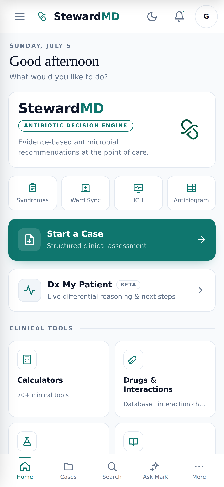
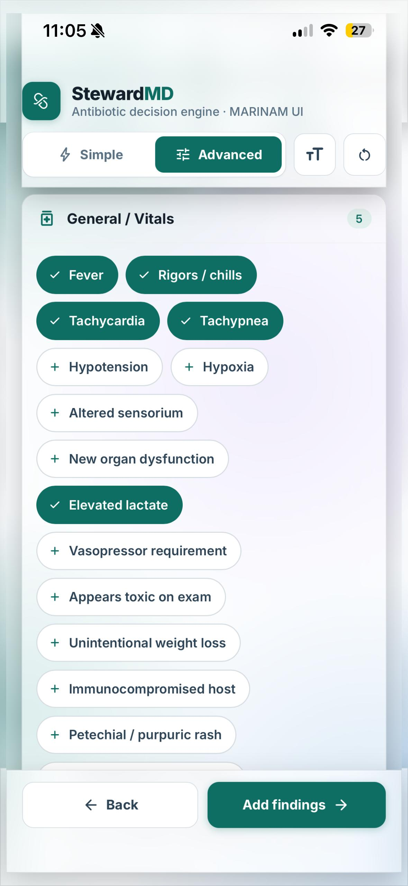
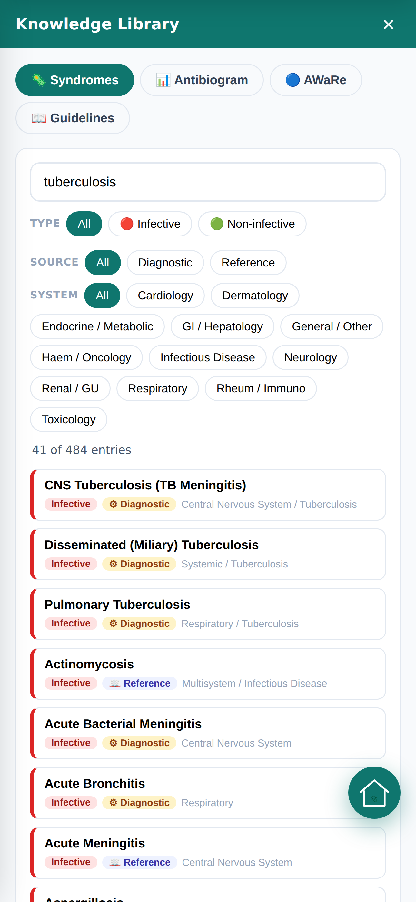
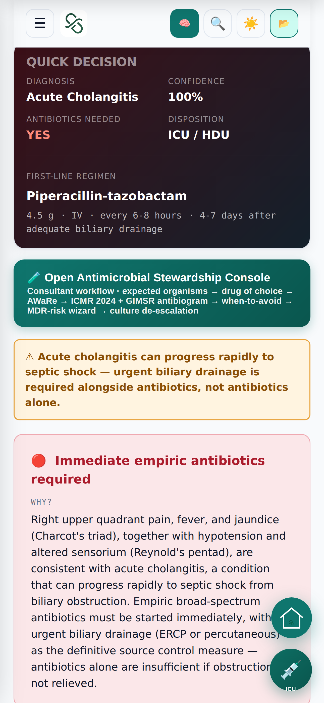
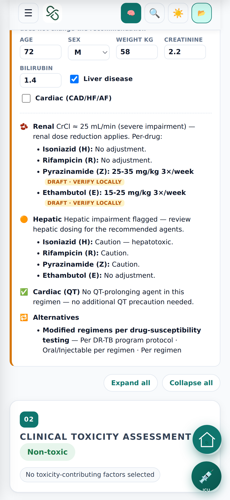
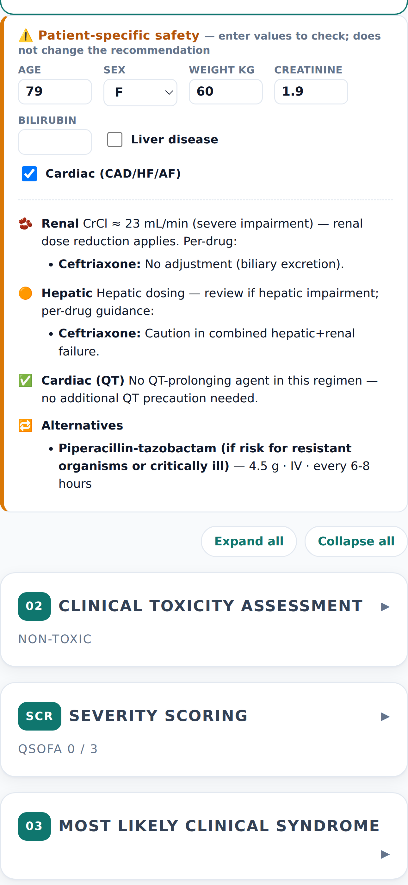
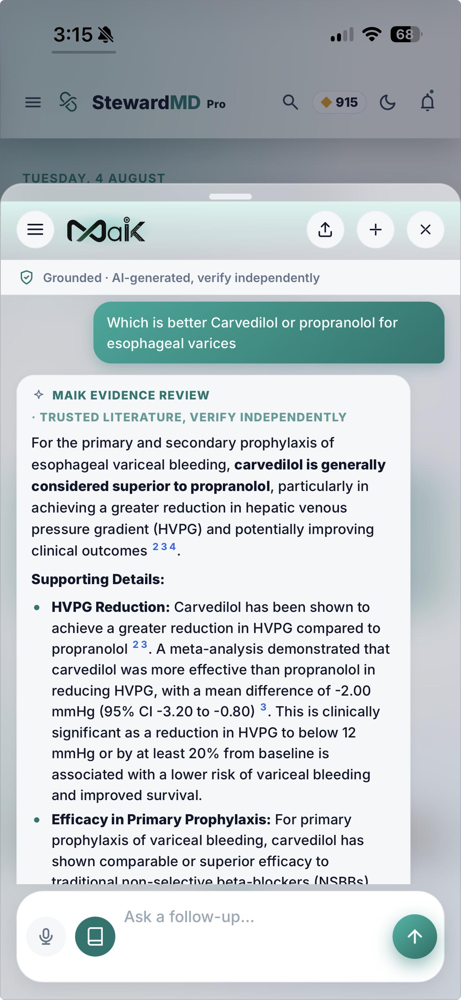

Agenda
What we will cover
01
The clinical problem
Where decisions are made, and where the evidence is not.
02
The platform
Reasoning, stewardship, ICU, prescribing, discharge and follow-up in one thread.
03
Integration and governance
EMR connectivity, clinician verification, data protection and institutional control.
04
The GIMSR pilot
Scope, departments, clinician champions and what we ask of the institution.
The decision moment
Clinical decisions are made at the bedside. The evidence lives everywhere else.
01
Under time pressure
A ward round moves faster than a guideline search. The differential, the empiric regimen and the dose are recalled, not looked up.
02
Across separate systems
Labs sit in the HIS, the antibiogram in a PDF, the calculator in a browser, the policy in a printed booklet.
03
Without a record of reasoning
Why a drug was chosen, and what was ruled out, is rarely captured in a form the institution can review or teach from.
Today
Eight apps on the round today, replaced by one
Hospital HIS
Guideline PDFs
Antibiogram sheet
Calculator sites
Drug references
Ward registers
Discharge templates
Phone follow‑up
→
StewardMD
One clinical thread from admission to recovery, carrying the patient's context between every step.
Platform overview
Six clinical domains, one engine underneath
01
Clinical reasoning
Live differential with a transparent confidence score and full explainability.
02
Antimicrobial stewardship
Empiric and definitive therapy against WHO AWaRe and your hospital policy.
03
ICU and ward workstation
AI-assisted diagnosis and treatment support, with vitals, trends, auto-computed scores and infusion rates.
04
Drug intelligence
Interactions, renal dosing, prescription scanning and a verified prescribing pad.
05
Clinical AI
MaiK answers, voice scribing and a retrieval brain built on vetted sources.
06
Continuity of care
Discharge generation and structured post-discharge recovery follow-up.
The product today
Shipping on iOS and Android, in clinicians' hands
A single home surface: start a structured case, open live differential reasoning, jump to the ward list, the ICU, the antibiogram or any of the clinical tools.
Native iOS
iPhone, App Store build
Native Android
Play Store build
Apple Watch
Native watchOS app and complications
Offline-first · the clinical bundle ships inside the app

The clinical thread
Context carries forward at every step
Doctor
Clinical reasoning
Stewardship
Drug safety
ICU
Prescription
Discharge
FollowCare
No re-entry
Findings entered once populate the differential, the regimen, the dose check and the discharge summary.
One record of reasoning
The case can be saved, reopened fully restored, and shared by code without patient identifiers.
Ends with the patient
Discharge is not the last step. FollowCare continues the thread into recovery at home.
Patient journey
From admission to recovery at home
01
Admission
02
Diagnosis
03
Treatment
04
ICU
05
Discharge
06
FollowCare
07
Recovery
Steps one to five happen inside the hospital and inside the clinician's app. Step six reaches the patient by a link, with no installation, in their own language.
Ecosystem
How the pieces connect
Hospital HIS and EMR
Laboratory and radiology
Institutional antibiotic policy
Department administration
StewardMD
Clinical engine, knowledge base and AI governance layer
Offline
Cloud
Audited
Verified clinicians
Residents and interns
Patients after discharge
Apple Watch and mobile
Live differential
Reasoning v2
Fever
Neck stiffness
Altered sensorium
Photophobia
INFECTIOUS
Acute bacterial meningitis
38
Viral meningoencephalitis
24
NON-INFECTIOUS
Subarachnoid haemorrhage
14
Clinical Confidence Score · transparent rule-based, not a validated probability
Clinical Reasoning Engine
Rendered from the shipped UI
The differential re-ranks as findings are added
Two-section output. Infectious and non-infectious causes are ranked separately, so a possible infection is never buried under a long list.
Clinical Confidence Score. A transparent weighted score from 0 to 100 per diagnosis, not an opaque probability.
Suggested next findings. After each finding the engine proposes the highest-yield question to ask next.
Deterministic core. The engine decides first. AI only explains a differential that has already been computed.

Progressive finding workflow
The engine asks in the order a clinician asks
STEP 01
General findings
Fever, duration, systemic features.
STEP 02
Involved system
Which system is driving the presentation.
STEP 03
Common findings
The high-yield discriminators for that system.
STEP 04
Rarer findings
The details that separate close diagnoses.
CLINICAL INFORMATION THRESHOLD
The differential stays hidden until at least three meaningful findings are present, so a single vague symptom cannot generate a misleading list.
Acute bacterial meningitis
Confidence 38
SUPPORTING
Fever · Neck stiffness · Altered sensorium · Photophobia
CONTRADICTORY
No petechial or purpuric rash recorded
MISSING
CSF analysis · Blood cultures · Focal neurological deficit not yet assessed
WHY NOT HIGHER
Confidence is held below 40 until cerebrospinal fluid findings are entered.
RED FLAG
Do not delay antibiotics for lumbar puncture or imaging.
Explainability
Rendered from the shipped UI
Every ranking can be interrogated
Supporting evidence
Which findings pushed this diagnosis up the list.
Contradictory evidence
What argues against it, stated explicitly.
Missing evidence
What has not been asked or tested yet.
Why not higher
The reason a diagnosis sits at rank three and not rank one.
Red flags
Time-critical features surfaced before anything else.
Confidence trail
How the score moved as each finding was entered.
For a teaching hospital this is the teachable artefact: the resident sees not only the answer but the argument.
Advanced Reasoning Workspace
A vignette in, a structured case out
Free-text vignette
→
Clinical NLP layer
→
Canonical findings
→
Ranked differential
Deterministic and zero-token
The NLP layer maps narrative to canonical findings with no language model and no web search, so the same text always yields the same case.
Compare up to three diagnoses
Side-by-side comparison with a confidence timeline showing how the case evolved.
Save, continue, export, print
A case can be paused mid-round and reopened later fully restored.
DX Management briefs
From a diagnosis to a plan of action
Each diagnosis carries a management brief drawn from the knowledge base, so the reasoning output leads directly into treatment.
First-line treatment
Differentials and mimics
What to investigate
Red flags


Syndrome Decision Console
The whole decision on one screen
Diagnosis, confidence, whether antibiotics are indicated, disposition and the first-line regimen with dose, route and duration, before the clinician scrolls.
Likely organisms
Coverage matrix
Definitive therapy
Culture de-escalation
Stewardship workflow
Six gates before an antibiotic is recommended
01
Infection gate
Very likely through to non-infectious favoured.
02
Syndrome
Site and severity of infection.
03
Expected organisms
Local and national resistance applied.
04
AWaRe check
Watch and Reserve drugs flagged.
05
Hospital policy
Institutional overlay takes precedence.
06
De-escalation
Narrow on culture, stop on time.
No antibiotic is proposed until the case has passed the infection gate. Stewardship begins with the decision not to prescribe.
Worked example
Acute cholangitis, from findings to regimen
01
Findings entered. Fever, jaundice, right upper quadrant pain, hypotension.
02
Infection gate. Graded as very likely infective, so the console proceeds.
03
Organisms and resistance. Enteric Gram-negatives and anaerobes, checked against the ICMR-AMRSN national antibiogram and the local one.
04
Regimen and AWaRe. Empiric therapy with dose, route and duration, with Watch and Reserve status flagged.
05
Source control and review. Biliary drainage flagged as time-critical, with de-escalation prompted once cultures return.

Hospital policy overlay
Your policy is the recommendation, not a footnote to it
A clinician selects their hospital once. From that point, every empiric recommendation is resolved against the institution's own antimicrobial policy, and each recommendation carries a source badge naming where it came from.
RESOLUTION ORDER
01
Hospital antimicrobial policy
Checked first, and it wins
02
National guidance: ICMR, NCDC
Where the policy is silent
03
International guidelines: IDSA, WHO, ATS
The fallback layer
Already built in
GIMSR HIC-3e 2024
The GIMSR hospital infection control antimicrobial policy is already encoded in the stewardship console, alongside the ICMR-AMRSN national antibiogram.
Recommendation Source: GIMSR HIC-3e 2024
Treatment-failure wizard
When the patient is not improving
INPUT
Current drug, dose and duration
What the patient is actually on, how long they have been on it, and what has happened since.
→
ASSESS
MDR risk, source control, coverage gaps
Is the organism likely resistant, is the source undrained, or was the spectrum wrong from the start.
→
OUTPUT
Escalate or de-escalate, with reasoning
De-escalation is a first-class recommendation. The wizard is as willing to narrow therapy as to broaden it.
Every recommendation names its source
Inside the workstation
What the unit gets
Guided clinical workflow
Findings to working diagnosis to Deep Review, as a repeatable unit routine.
Live vitals and trends
MAP, lactate, urine output and running infusions with target flags and an event log.
Auto-computed severity scores
Computed from ICU state, and greyed out whenever an input is missing rather than guessed.
Electrolyte correction engine
Guideline-referenced sodium, potassium, calcium, magnesium and phosphate correction.
Imaging import and correlation
Imaging brought into the case so it sits alongside the clinical picture.
Rounds and task collaboration
Shared rounds, tasks, a timeline and notifications across the unit team.
Discharge creator
Builds the discharge summary and maps it into the hospital HIS's own section headings.
Unit preparation protocols
Your standard drug concentrations saved once, then used by every calculator.
Lab Watch alerts
Opt-in monitoring that alerts the treating clinician on critical values.
Apple Watch
Hands free at the bedside, and in a code
NATIVE WATCHOS APP
CODE BLUE
04:12
112
cpm
ON TARGET
Next cycle 0:48
Shock
Adrenaline
CRITICAL
Potassium
6.8
mmol/L
Ref 3.5 to 5.1
Bed 07 · 3 min ago
Acknowledge
Acknowledge from the wrist
A critical value or a round instruction arrives as an alert. One tap acknowledges it, with a confirming haptic.
Works when the network does not
Acknowledgements are queued with idempotent identifiers and synced on reconnection, so nothing is double-counted or lost.
My patients at a glance
The ICU roster with NEWS2 and the latest heart rate, blood pressure, saturation and temperature, with a stale-data banner when the phone is out of reach.
Tools without the phone
Eighteen calculators, ABG interpretation on the Digital Crown, drug lookup, sepsis and procedure timers, complications and Smart Stack.
CODE BLUE ON THE WRIST
The fastest route to a code is already on the clinician's arm
Started by tap, Action button or Siri
Two-minute cycle haptic, wrist down
Shock, drug and ROSC on a timeline
Severity is icon plus label, never colour alone
Motion-based estimates, not a measure of CPR quality or depth.

Infusion and vasopressor calculator
Pump rates without arithmetic at three in the morning
24 drugs, one tap. Weight-based pump rate with the full monograph attached.
Nurse Mode. A copy-ready and print-ready preparation sheet for the bedside nurse.
Universal calculator. Rate, concentration and duration for any drug, amount and volume.
Local concentrations. The unit's own standard dilutions drive every calculation.
Medication safety workflow
Five checks between intent and administration
01
Capture the list
Typed, searched, imported from the ward, or photographed.
02
Resolve to generics
Brand and composition aware, with fuzzy matching for handwriting.
03
Interaction analysis
Interactions, duplicates, QT, renal and bleeding risk.
04
Organ-adjusted dose
Renal and hepatic adjustment from the patient's own creatinine.
05
Verified prescription
Printable Rx, stamped with the prescriber's registration number.
Each checkpoint is a place a preventable adverse event can be caught before the drug reaches the patient.
Interaction checker
Around 669 rules run against every list
Major interactions
Therapeutic duplicates
QT prolongation
Renal and bleeding risk
Ward Sync can push the patient's current medication list straight into the checker, so nothing has to be retyped from the chart.



Patient-specific dosing
The dose is adjusted to this patient
Creatinine clearance computed from age, weight and creatinine, or pulled from the patient's latest renal function test.
Per-drug renal and hepatic adjustment, shown against the standard dose rather than replacing it silently.
QT risk assessed alongside the dose, in the same view.
Prescribing tools
Three tools around the prescription itself
Prescription Scan
Photograph a prescription or case sheet. Text recognition runs on the device first, so the image never leaves the phone; a cloud path is used only where on-device recognition is unavailable.
Editable review rows before anything is accepted
Prescription Generator
An editable, printable prescription with dosing drawn from the drug database, available only to clinicians verified against the National Medical Register and stamped with their registration number.
Gated behind doctor verification
Offline Drug Database
The Indian drug market on the device: brand, composition, class, manufacturer, form, pack and MRP. Works with no network at all.
126 MB on device · 21 MB download
Calculators and scores
405 validated tools, surfaced by context
405
validated calculators
20
clinical specialties
Cardiovascular
Critical care
Neurology
Renal
Hepatology
Haematology
Oncology
Obstetrics
Paediatrics
Psychiatry
Toxicology
Rheumatology
Respiratory
Endocrine
Gastroenterology
Infectious disease
Dermatology
Musculoskeletal
Ophthalmology
General
Contextual suggestions
Shock surfaces the vasopressor tool, DKA the insulin protocol, stroke the A2DS2 score.
Favourites on the wrist
Pinned calculators and drugs sync across devices and to the paired Apple Watch.
Every calculator carries its source citation.

Answer architecture
Three tiers, in order of cost and certainty
TIER 0
Local knowledge engine
A deterministic retrieval engine answers from the on-device knowledge base, instantly and with no model call.
TIER 1
Hybrid retrieval and refiner
Semantic search over the vetted knowledge base, with a query refiner routing the question.
TIER 2
Generative answer
A reference-style written answer with numbered citations, used only when the first two tiers cannot resolve the question.
KNOWLEDGE HIERARCHY
Harrison
→
ICMR
→
Society guidelines
→
Hospital overlay
Constraints on the AI
What the assistant is not allowed to do
Intent firewall
The assistant answers clinical questions only. The gate is an allow-list requiring a positive medical signal, not a list of blocked topics, and it is held to zero false refusals on genuine clinical questions.
Conversation history stays on the device
The chat sidebar is scoped to the account and stored on the device, not in the cloud.
The engine decides, the AI explains
Differentials and regimens are computed deterministically. The language model explains an answer that has already been derived; it does not produce the answer.
Nothing auto-applies
Scribed and extracted fields are presented for clinician review before they populate a case. Every AI-assisted output requires explicit confirmation.
Documentation assistance
Speaking is faster than typing on a round
MaiK Scribe
Speak
→
Transcript
→
Structured fields
→
Clinician reviews
The clinician dictates the history. Structured data is extracted and shown for review. Fields autofill only after the clinician accepts them.
Image Engine chooser
Private device recognition
The image stays on the phone. Free, and the default where available.
Assisted vision
Stronger on monitors and ventilator displays, chosen explicitly by the clinician.
The privacy trade-off is made by the clinician, per capture, rather than by the platform.
Integration architecture
How clinical context reaches the app
SOURCE
Hospital HIS
Demographics, laboratory, radiology, medication history. Remains the system of record.
→
BRIDGE
StewardMD Connect
Per-doctor authenticated session, normalised clinical context, no credentials retained where policy prohibits it.
→
CONSUMERS
Clinical modules
Ward Sync, ICU dashboard, renal dose tool, interaction checker, patient summary.
Ward Sync
Live inpatient list, lab drawer and radiology, per doctor.
Lab Watch
Opt-in monitoring with alerts on critical values, behind an explicit consent gate.
Module autofetch
Ward data feeds the dose tools and the interaction checker without retyping.
Admin console
Institution-side configuration of the connection and its permissions.
Security and institutional trust
Why the institution can permit EMR access
LAYER 01
Institutional control
Connection happens only after institutional approval. Administrators retain control over integration, permissions and access.
LAYER 02
Role-based authentication
Each clinician authenticates individually and reaches only the records they are authorised to see.
LAYER 03
Credential handling
No credentials are retained after an authenticated session where institutional policy prohibits it.
LAYER 04
Auditability
Access is traceable, and per-user data isolation keeps saved cases and ICU records keyed to the authenticated clinician.
LAYER 05
Feature-level enablement
Every risky module sits behind a named flag, so a capability can be enabled or disabled for the institution without a redeployment.
Recovery pathway
From discharge summary to measured outcome
01
Enrolment
A link by messaging or the web portal. No app to install.
02
Pathway mapping
26 deterministic pathways mapped from the discharge diagnosis.
03
Recovery monitoring
Structured check-ins in the patient's own language, detected automatically.
04
Doctor Action Center
Ten clinician actions, drafted replies for approval, an encrypted log and audit trail.
05
Recovery analytics
Cohort and outcome intelligence for the institution.
WORKED EXAMPLE · DISCHARGED AFTER PYELONEPHRITIS
Day 0
She is discharged. A link reaches her phone. She opens it in Telugu without installing anything.
Day 2
The pyelonephritis pathway asks about fever, flank pain and whether she is finishing the course.
Day 3
She reports fever again. It surfaces in the treating doctor's inbox with a drafted reply awaiting approval.
Day 4
The doctor calls her back for review. The exchange is logged and auditable. No medicine was changed by the system.
Hard safety rails
Four things FollowCare will never do
Never change a prescription
Never diagnose definitively
Never stop a medicine
Never replace the treating doctor
No patient identifiers appear in links, messages or logs. Data is retained for seven days after recovery, in line with the Digital Personal Data Protection Act.
Clinician verification
A clinician-only platform, verified against the National Medical Register
Upload registration certificate
→
Details read automatically
→
Cross-checked against the live register
→
Verified claim set
Prescribing is locked behind it
The prescription generator is unavailable until verification succeeds, and every prescription carries the registration number.
StewardMD ID
Every signed-in clinician has a human-readable account identifier used for case sharing and support.
Per-user isolation
Saved cases, favourites and ICU records are keyed to the authenticated user, with no cross-account visibility.
Administrative control plane
Anything can be turned down, or turned off
Per-module daily AI caps
Each AI capability has its own per-clinician daily limit.
Live model switch
The active model can be changed at runtime with no redeployment.
Daily budget breaker
A hard spend ceiling per day, enforced server-side.
Emergency pause
AI features can be paused or moved to a reduced mode immediately.
Abuse watch and cost audit
Usage thresholds with a full audit of what was spent and by which module.
Feature-flag registry
Every risky module has a named flag, so it can be disabled institution-wide instantly.
Metering never blocks a clinical call. If the governance layer fails, the clinical function still works.
Specialty workspaces
Eight departments, one protected core
Surgery
ENT
Ophthalmology
Obstetrics and Gynaecology
Urology
Dentistry and OMFS
Paediatrics
Internal Medicine
The protected core engine
Each workspace layers a department's own vocabulary and tools around the Internal Medicine engine, which is never forked. Clinicians set their workspace preference once.
Each workspace carries a branch watermark and its own in-app feedback channel, so departmental feedback stays attributable during a pilot.
Platform and infrastructure
Native applications, built to work without a network
Native iOS application
Native Android application
Apple Watch companion
Offline clinical dataset
The clinical bundle ships inside the application. Reasoning, calculators, the drug index and the offline dataset all function with no connectivity, which matters on a ward round in a building with poor signal.
Native performance
Native security
Native notifications
Haptics and motion
Dark and light themes
Backend
Edge compute and storage
Serverless functions, key-value, relational and object storage at the edge
Vector search
Embedding-based retrieval across the clinical knowledge base
Authentication and sync
Google, Apple, phone and email sign-in with per-user document isolation
Push notification delivery
Native delivery on both platforms, with per-category clinician opt-in
Cases, teaching and updates
Built for a department that teaches
Saved cases
A decision saved with all its findings, reopened later fully restored and synced to the clinician's account.
Case sharing by code
A short code or link, expiring after thirty days, carrying the clinical findings and decision only, with no patient identifiers.
Recent case trail
A rolling record of the last cases across reasoning, clinical decision and ICU, held on the device.
Guidelines library
Surviving Sepsis, IDSA, ATS, ICMR, WHO, CLSI, GOLD, NICE and AWaRe, with the ICMR-AMRSN antibiogram.
Medical updates
A curated notification centre for new approvals, guideline changes and key studies, with per-category opt-in.
Learning progress
A server-authoritative learning ledger with streaks and achievements, useful for structured resident engagement.
The platform in numbers
What is built and countable today
405
clinical calculators and scores
20
clinical specialties covered
669
drug interaction rules, approximately
1,041
ECG teaching cases in the learning atlas
26
deterministic recovery pathways
8
specialty workspaces
126 MB
offline Indian drug database on the device
Clinician
only
only
verified against the National Medical Register
Upcoming · ECG intelligence
KardiQ X
CLINICAL VALIDATION
DEFAULT OFF
ECG interpretation support with inference running on the device, and a teaching atlas built alongside it.
On-device inference
Runs locally on the phone, with the model fetched on first use.
STEMI and ACS support
Rule-based detection support with HEART and TIMI scoring alongside.
PDF import and digitisation
An ECG can be brought in as a file or an image rather than retyped.
Explainable output
The interpretation states what it saw, for the clinician to accept or reject.
1,041
ECG lessons with quizzes in the Learn-ECG atlas, which ships with the module and is directly useful to undergraduate and postgraduate teaching.
Upcoming · Chest radiography
ThoreX AI
CLINICAL VALIDATION
STAGED ROLLOUT
Chest X-ray interpretation support: explain, impression, clinical correlation and differential suggestions.
Structured impressions
A drafted impression the clinician edits and owns.
Differential suggestions
Radiographic findings mapped to candidate diagnoses.
Clinical correlation
The film read against the case rather than in isolation.
Assistive by design
Built to support, never to replace, the clinician's own read.
PRIVACY ARCHITECTURE
The image stays on the device
The server endpoint is text-only and never receives the radiograph. Only structured findings are sent when cloud assistance is enabled by the clinician.
Upcoming · Retinal imaging
FundX AI
CLINICAL VALIDATION
SELECTED CLINICIANS
Fundus and retinal imaging captured on a smartphone, with a live acquisition guide that helps the clinician get a usable image.
Live acquisition guidance
An on-screen guide directs alignment and distance during capture.
Spatially anchored guide
A native augmented-reality branch anchors the guide in space on supported devices.
Image quality assessment
Unusable captures are rejected before anything is interpreted.
Screening workflow
Structured for diabetic retinopathy screening at the point of care.
Referral assistance
Findings routed toward an ophthalmology referral decision.
Screening relevance for GIMSR
A camp or outpatient screening pathway that needs no dedicated fundus camera.
Upcoming · Dermatology
SKN X AI
CLINICAL VALIDATION
BETA CLINICIANS ONLY
Camera
→
Image quality assessment
→
Lesion classification
→
Vision-language interpretation
→
Evidence retrieval
→
Educational report
Citations cannot be invented
Guideline summaries and references are drawn only from a vetted evidence set, never generated freely.
No image leaves the device
The server request is validated to reject any image-bearing field. The reasoning layer receives text only.
Malignancy routes to referral
A suspected malignant lesion is never eligible for a treatment draft, under any configuration.
The module is educational and clinician-only. Any treatment drafting capability remains disabled behind a separate flag pending clinical, data-protection and safety sign-off.
Validation governance
How these four modules reach general availability
STAGE 01
Built and internally tested
All four modules are complete and under automated test today.
STAGE 02
Controlled clinician beta
Enabled per device for named clinicians, revocable remotely at any time.
STAGE 03
Clinical sign-off
Target December 2026, subject to specialist review of each module's output.
STAGE 04
General availability
Only after validation, regulatory review and internal quality benchmarks are met.
These products are intentionally feature-flagged and released only to selected clinicians for controlled validation. They are not generally available until internal validation, regulatory review and quality benchmarks are completed.
Positioning
An integrated platform, not a collection of apps
CAPABILITY
TYPICAL CLINICAL APP
STEWARDMD
Differential reasoning with explainability
Reference lookup only
Built in
Antimicrobial stewardship with hospital policy
Generic guidance
Institution-specific
ICU workstation and infusion calculation
Separate tool
Same platform
Prescribing tied to registry verification
Rarely enforced
Required
Hospital EMR integration
Not offered
Per-institution
Post-discharge patient follow-up
Out of scope
Included
Full function without connectivity
Requires network
Offline-first
Institutional AI governance and audit
Not exposed
Administrator controlled
Where the platform stands
A founder-built clinical platform, now approaching its first institutional pilots
Complete native platform
Shipping iOS and Android applications with an Apple Watch companion.
Comprehensive clinical scope
Reasoning, stewardship, ICU, prescribing, discharge and follow-up in one product.
Offline-first architecture
Designed for wards where connectivity cannot be assumed.
Built for Indian workflows
ICMR resistance data, the Indian drug market, and Indian registration verification.
Modular deployment
Departments can be enabled independently, with named flags per module.
Integration ready
Hospital connectivity, admin console and normalised clinical context already built.
Clinician verification
Access is gated on the National Medical Register, not on self-declaration.
Advanced modules in validation
Four AI imaging modules built, tested, and deliberately held in controlled validation.
Commercial model
How access works during and after the pilot
FOR THE GIMSR PILOT
Free for every GIMSR clinician for the one-month pilot
Full access to all eligible features for participating doctors and residents, with no cost to the institution during the evaluation period.
No commitment required to evaluate
INDIVIDUAL
StewardMD Pro
An affordable individual subscription for clinicians after the trial, with a seven-day free trial for any doctor outside the pilot.
Offline drug database
Assisted vision capture
Expanded AI allowances
INSTITUTIONAL
Enterprise Edition
For medical colleges, hospitals and healthcare networks.
Hospital EMR integration
Organisation-wide deployment
Department administration
Centralised analytics
Institution-specific antimicrobial policy
Hospital branding
Dedicated onboarding and support
Why GIMSR should partner with StewardMD
Value to the institution, and to the clinician
BENEFITS TO GIMSR
AI-assisted clinical decision support for clinicians
Faster evidence retrieval at the bedside
Standardised antimicrobial stewardship aligned to institutional policy
Reduced duplicate data entry through EMR integration
A native ICU clinical workstation
Safer prescribing with interaction checking and renal dose adjustment
Intelligent discharge workflow
Structured post-discharge follow-up with FollowCare
An educational platform for undergraduate and postgraduate training
Support for evidence-based medicine and guideline adherence
Digital innovation aligned with modern academic healthcare
BENEFITS TO DOCTORS AND RESIDENTS
Saves valuable clinical time
Reduces cognitive workload during busy rounds
Instant access to hundreds of validated calculators
Clinical reasoning assistance with transparent explanations
AI-assisted documentation and voice scribing
Offline clinical tools when connectivity is limited
An integrated workflow from admission to discharge
No repeated manual entry across supported modules
The pathway at GIMSR
One connected route from the HIS to recovery
01
GIMSR hospital EMR
02
StewardMD
03
Clinical reasoning
04
Drug safety
05
ICU support
06
Prescription
07
Discharge summary
08
FollowCare
09
Better continuity of care
Each step inherits the patient context from the one before it. The clinician enters the ward round once and does not retype anything through discharge.
The proposal
What we are asking of GIMSR
01
Approval for a pilot deployment
A defined evaluation period at GIMSR, free for every participating clinician.
02
Controlled EMR integration
Permission to connect to the hospital EMR in a controlled environment, under institutional oversight.
03
Selection of departments
Internal Medicine, ICU and Infectious Diseases are our preferred starting departments.
04
Nomination of clinician champions
Named clinicians who will give structured feedback throughout the pilot.
05
Validation in real workflows
The opportunity to evaluate the platform in genuine clinical use, and to generate evidence for wider institutional adoption.
The partnership
Why StewardMD is the right digital clinical partner for GIMSR
01
AI-assisted clinical excellence
02
Evidence-based medicine
03
Improved patient safety
04
Reduced documentation burden
05
Better medical education
06
Future-ready digital healthcare